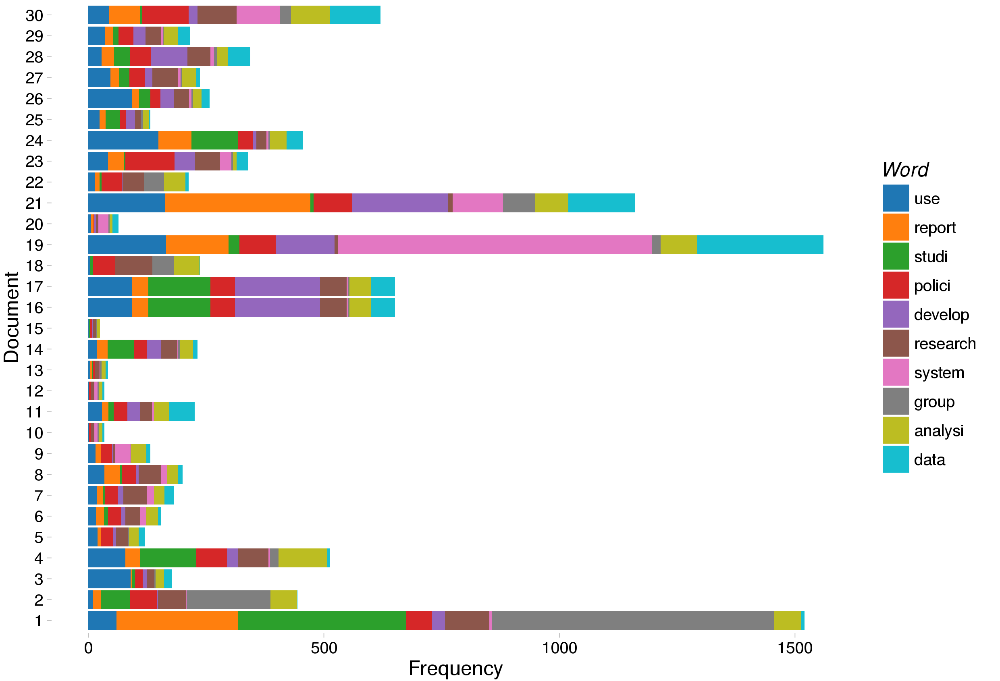
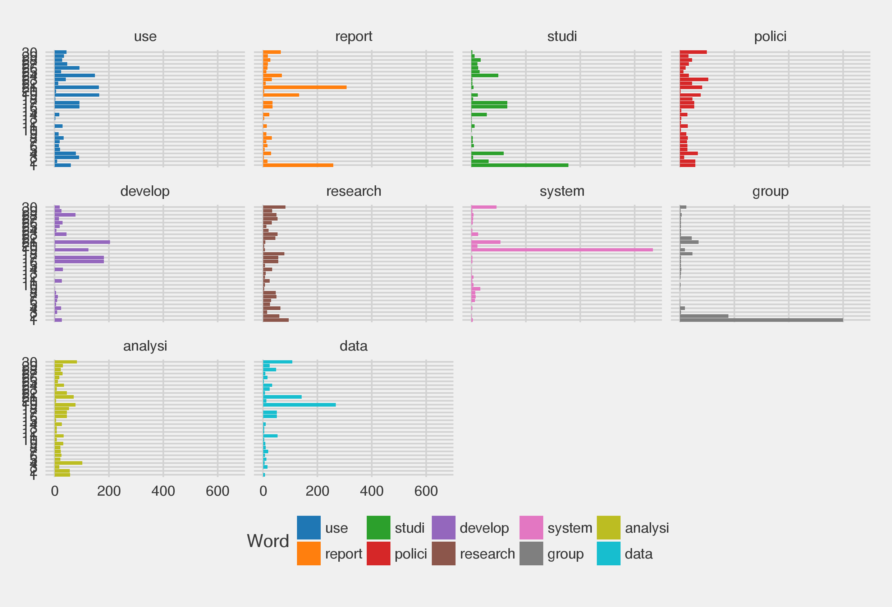
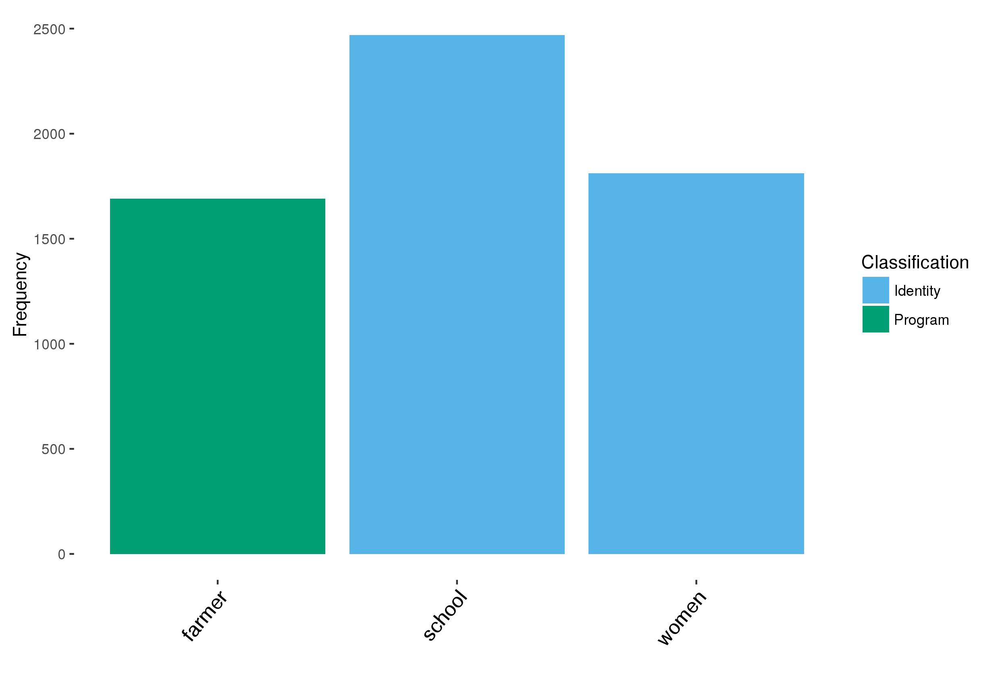
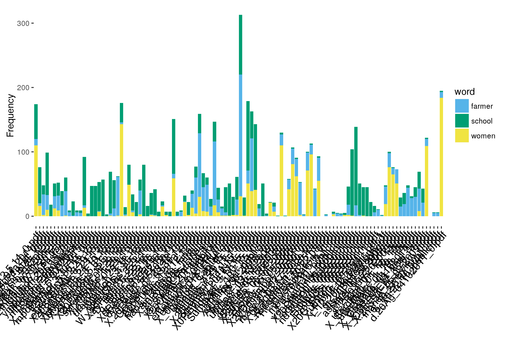
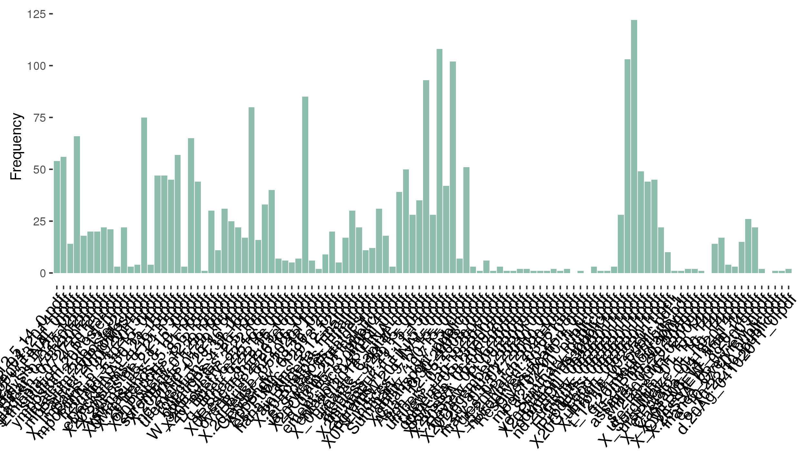

Epartexttools
The Purpose of the Project
This toolkit provides a set of resources for analyzing textual documents using the R programming language for the conduct of portfolio analysis and review. The tools rely on text mining, natural language processing, and machine learning programs developed by other R users and as such heavily relies on code developed by other packages. Thus, it may be thought of as a set of tools enabling portfolio analysis rather than a new package for conduct of text analysis.
The tools are set up to be run on a Google Cloud compute instance. this has the benefit of allowing you to run processes in the cloud rather than on your own local computer. While setting up and running a Google Instance can be a new trial for those who have never used a Linux shell, 99% of the coding can be done in RStudio simply by visiting the rstudio-server webpage that the Google Cloud Instance Startup code creates.
In terms of sizing, a 2GPU 7.5GB RAM n1-standard machine should work fine so long as you increase the size of the JAVA heap space. If you need a job to complete more quickly, you could buy a larger instance. Cloud pricing is here. You can set up the job to be pre-emptable as well. This will save you lots of money and is highly recommended. When using a preemptible instance you must make sure to save your robjects to file regularly as Google can shut down your work at any time. However, this will reduce the computing costs by about 1/5th.
The tools can be used with Amazon AWS if that is a more familiar format, however, the installation instructions will be somewhat different and you will have to be flexible in porting the cloud_startup code to AWS.
To run this document, clone the repository to a local directory. To do this, first set up an ssh key with rstudio by going to tools...global options...git/svn...create ssh key and registering the key with your github account. Then, go to file...new projects...version control and enter the ssh site for the github page (the clone link). Alternatively, you download a zip file of the repository and open the .Rproject file. This document is stored as readme.md with coding in chunks.
The program depends on a few software installations, notably "antiword" or "tika" and "Apache openNLP". To install these on a mac, one can use homebrew and run the command "brew install antiword". Installing openNLP requires updating the Java JRE file on your system. This can also be done via homebrew on a mac.
The document reading code is designed to be able to use the tika library, though this is disabled by default.
Useful Links
Theory of Text Tools
The goal of the text tools is to build and develop a methodology for automated portfolio review that can leverage tools of machine learning, supervised machine learning, and text mining to support human coding and portfolio review analysis tasks. The basic framework under development is shown below.

The tools work towards two broad goals. First of all, the tools provide a flexible framework for describing and classifying the content of textual documents. This includes analysis of word frequencies, description of common words, testing for correlations between words, and categorization of strings of text into modeled or human coded categories of topics. The text tools, as designed, support query-based description, such as "how often does EPAR research involve the words policy analysis versus program evaluation?" However, they also allow a user to explore documents by allowing the documents to suggest word correlations, commonalities, and topics.
In addition to the basic description tasks, the tools are designed to support automated extraction of program theory from a body of documents by relying on a combination of machine learning, natural language processing, and supervised classification techniques.
This readme file first guides a user through the basic description and classification tasks, and provides a basic example of how the tools can be leveraged to extract program theory. At present, the code analyzes the public body of EPAR research stored on the Evans School of Public Policy website, but it is designed to be readily portable to any document set.
Description and Classification
Extracting Text
To begin this process, first load the textFunctions. For demonstration purposes we also create a demonstration document dataset using the demo.docs.R code.
source("textFunctions.R")
source("demo.docs.R")
Main functions enabling workflow include reading documents into R via the "getTextR" command. The getTextR command takes a file directory as an argument, and returns a textual corpus. It is capable of reading word documents (both doc and docx), pdf documents, and txt documents. Further document types can be added by replacing the "FILETYPE NA" line with additional document if loops. The allDocs() command is a conveniance wrapper which loops through a directory parsing documents and creating a corpus with metadata.
#dir.create("figures")
corpus1<-allDocs("demo.docs.folder")Documents are read into R as a textual corpus--the method used by the TM package. This enables preservation of document metatdata alongside document text. Metadata such as ids and timestamps is stored in the .$meta location of each corpus.
lapply(corpus1,function(X){X$meta})[[1]]Cleaning and Parsing Text
Texts are stored in the corpus as character strings facilitating use of different analysis packages. Some basic cleaning tools from the TM package may be helpful for performing various funcitons.
corpus2<-doc_clean_process(corpus1)The object Corpus2 is now a cleaned version of the original corpus, which is useful for many description tasks and some analysis tasks.
Description: Word Frequencies and Associations
For basic description, it is often useful to generate a term document matrix. This is done via the code below, with an additional step to remove sparse terms.
tdm<-TermDocumentMatrix(corpus2) %>% removeSparseTerms(.,.6)
Once a term document matrix is available, one can easily begin to create tables and charts to explore the data.
The word_heatmap function provides an easy wrapper for structuring term document matrices into an interactive matrix.
word_heatmap(tdm,6)
saveWidget(word_heatmap(tdm,6),"figures1.html")word_heatmap(tdm,20)
saveWidget(word_heatmap(tdm,20),"figures2.html")Using wfplots(), one can create a basic ggplot() object describing the most frequent terms across documents, or the documents in which the most frequent terms are likely to occur. The objects created by the command can be edited by adding on additional functions.
wfplots(tdm[,1:10],typePlot=1,10,shortendoc=TRUE)
ggsave("figures/figures3.png")
wfplots(tdm[,1:30],typePlot=0,10,shortendoc=TRUE)
ggsave("figures/figures4.png")
wfplots(tdm[,1:30],typePlot=0,10,shortendoc=TRUE)+theme_fivethirtyeight()+facet_wrap(~word)
ggsave("figures/figures5.png")
The same is true for the interest_plot command, which allows the user to specify words they are interested in viewing across documents rather than relying on specific frequencies.
tdm$dimnames$Docs<-substring(tdm$dimnames$Docs,nchar(tdm$dimnames$Docs)-20)
interest_plot(c("women","farmer","school"),tdm, by.var=c("Identity","Program","Identity"), "Classification")
ggsave("figures/figures6.png")
interest_plot_bydoc(c("women","farmer","school"),tdm)
ggsave("figures/figures7.png")
By editing the term document matrix to include weighting, each of these commands can be used while taking the length of documents into account.
tdm2<-TermDocumentMatrix(corpus2,control=list(weighting=function(x) weightSMART(x)))
tdm2$dimnames$Docs<-substring(tdm2$dimnames$Docs,nchar(tdm2$dimnames$Docs)-20)
wfplots(tdm2[,1:10],typePlot=1,10)
wfplots(tdm2[,1:30],typePlot=0,5)
ggsave("figures/figures8.png")
interest_plot_bydoc(c("school"),tdm2)
ggsave("figures/figures9.png")
word_heatmap(tdm2,6)
saveWidget(word_heatmap(tdm2,6),"figures10.html")tdm3<-tdm
tdm3$v<-(tdm3$v/colSums(as.matrix(tdm3))[tdm3$j])*100
word_heatmap(tdm3,6)
saveWidget(word_heatmap(tdm3,6),"figures11.html")
rm(tdm2,tdm3)One command, assocPrettyOneStep(), takes a wordlist as an argument and returns a list of associated words above a correlation threshold. This thus informs what words are most likely to cooccur accross a corpus of documents.
assocPrettyOneStep(c("women","farmer","effect"),tdm, corpus2,.5)
saveWidget(assocPrettyOneStep(c("women","farmer","effect"),tdm, corpus2,.5),"figures12.html")Bigrams or trigrams (rather than word-based tokenization) can also be used to process text by creating a custom ngram tokenizer and inserting it into the TermDocumentMatrix() command. All of the previous commands, with the exception of the word association table, can be used to explore word frequencies and correlations.
BigramTokenizer <-function(x){unlist(lapply(ngrams(words(x), 2), paste, collapse = " "), use.names = FALSE)}
tdm_bi <- TermDocumentMatrix(corpus2, control = list(tokenize = BigramTokenizer))
freqterms2<-lapply(1:length(corpus2), function(X){findFreqTerms(tdm_bi[,X],lowfreq=10)})
tdm_bi$dimnames$Docs<-substring(tdm_bi$dimnames$Docs,nchar(tdm_bi$dimnames$Docs)-20)
word_heatmap(tdm_bi,10)
saveWidget(word_heatmap(tdm_bi,10), "figures13.html")
rm(tdm_bi)Towards Causal Patterns
While description of word frequencies is useful as a baseline for exploring textual documents, such methods rely on a bag-of-words approach, meaning any natural meanings to words or meaning derived from ordering of text is lost. Natural Language Processing provides a methodology for incorporating structure and natural language meanings of words into analysis via detection of common patterns in text.
The goal of the combined topic modelling and natural language processing process is to identify key patterns in program theory adpted by grant opportunities and processes. The tools rely on many of the text characterization tools, but build in text processing capabilities facilitated by Stanford CoreNLP, OpenNLP, IBM Alchemy API, Mediamatter's Cliff-claven, and Wordnet. To run the processes, a the Stanford core nlp tools, OpenNLP and a Docker server for Cliff-claven need to be installed on the instance computer where the model is running. The majority of the functions needed to run the processing proceedures are included in the TopicFunctions.R file, though there is dependence on the textFunctions.R commands for reading in and processing data. Thus, to begin using the tools, both of these files should be called from within R.
For using the tools, you first specify the name of a working folder. This is the folder where the files that are created by the code will be saved. Because many of the functions are memory heavy, saving files out of the commands to the working folders helps to limit the computational requirmeents on the computer.
Diagram of Causal Pattern Extraction
{kind=link}
Specify Working Folder
workingfolder<-"Research.Grants"
dir.create(file.path("..",workingfolder))
saveRDS(corpus1,file.path("..",workingfolder,"corpus.rds"))
source("TopicFunctions.R")Next, we can use the readMails command to read emailfiles from a specified folder to a messages folder. We also can read files in from a known path to the fileslist and build a corpus.
#messages<-readMails("../folderwithemails","../folderwithdocuments")
#fileslist<-lapply(file.path("../AgandNut",list.files("../AgandNut")),getTextR)
#fileslist<-fileslist[sapply(fileslist, function(X){length(X[[1]])})>1]
#tcorp<-do.call(c,fileslist)
#fullcorp<-c(tcorp,messages)
#fullcorp<-tcorp
#clean up workspace
rm(fileslist)
rm(messages)
jgc()
```{r}
We next prepare the data for processing. This is done by using the PreTopicFrame command, which removes entities and creates a term document matrix for fitting a structural topic model.
```{r}
#gets data ready for processing
BASE_INPUT<-PreTopicFrame(corpus1,1)
#saves files so you can reload
saveRDS(BASE_INPUT,file.path("..",workingfolder,"base_input1.rds"))For many types of grants, one is interested in categories across grants. These next commands are placeholders for adding such information. If each document is unique, the OpID can be set as a unique entry for each document like below.
#here we add opportunity labels to documents
BASE_INPUT$out$meta$OpID<-BASE_INPUT$out$meta$OrigGeotagging
Because we often want to know where a document talks about, we rely on the Cliff geocoder to tag documents. The code below builds a cliff server, starts the server, and makes predictions about document loctions. This is much different than simply looking for placenames as we generate relevance metrics across documents. Currently, the code is set up to generate a probability for each country and each document, which then can be converted to a total relevance for grants or opportunities.
buildcliff()
startcliff()
pred1<-PredictCountryByDoc(BASE_INPUT)
stopcliff()
BASE_INPUT$out$meta<-reflectCountryCol(BASE_INPUT$out$meta,pred1,20,FALSE)
saveRDS(BASE_INPUT,file.path(workingfolder,"basefile.rds"))
write.csv(pred1,file.path(workingfolder,"countrypredictions1.csv"))Topic Model
Once the proper nouns are (mostly) removed from the dataset, we can fit a topic model to the dataset. A topic model is an unsupervised machine learning method of categorizing words into common topics which then can be used to explore what topics different documents refer to. For fitting the topic model, we rely on the R package stm because stm allows for inclusion of covariates in the fitting of the topic model. For example, if a portfolio of projects has already been coded by a set of RAs for certain variables, these variables can be used to inform the modeling of topics.
Fitting a topic model has numerous benefits over simply viewing raw word counts, including that it allows exploration of the content of a batch of documents that can potentially reveal broad patterns missed by human coders. The stm package has its own text cleaning method which repeats many of the processing steps conducted above. Fiting the model can be somewhat slow but it has the advantage of self-generating an optimal number of topics based on Lee and Mimno (2014), while also utilizing a method that is well-suited to a large number of documents. Because there is no empirical basis for the number of topics, this approach provides a good starting point. In the code below, one can interactively select covariates to include in the topic model. Most likely topics are extracted from the theta matrix.
form1<-paste("~as.factor(Orig)",paste(select.list(colnames(BASE_INPUT$out$meta),multiple=TRUE),sep="",collapse="+"),sep="+")
writeLines(form1,file.path(workingfolder,"formula1.txt"))
jgc()
#to run remotely
#system("R CMD BATCH --no-restore run_topic_in_background.R", wait=FALSE)
st1<-stm(BASE_INPUT$out$documents,BASE_INPUT$out$vocab,data=BASE_INPUT$out$meta,prevalence=eval(parse(text=form1)),K=0, init.type="Spectral",max.em.its=500)
saveRDS(st1, file.path(workingfolder,"topicmodel.rds"))
BASE_INPUT$top.topics<-max.col(st1$theta)Extract Causal Words
Here, we read from a table of verbs to the wd dataframe. For the demo we only keep causal verbs. This functionality allows you to edit a google docs frame shared from the address, so you can add, subtract words. You also could replace the reading of the csv with a call to a local dataframe.
wd<-read.csv(textConnection(RCurl::getURL("https://docs.google.com/spreadsheets/d/1ng7I5QoYu_NzegZvO9568M42q52iVCsLz-D0WhVa--8/pub?gid=0&single=true&output=csv")),stringsAsFactors=FALSE)
allwords<-c(wd$Up.Words,wd$Down.Words)Annotating
We next annotate paragraphs, keeping only those with the verbs in the wd dataframe.
AnnotatesLarge<-AnnotateVerbsTopicJoin(allwords,BASE_INPUT$processed,BASE_INPUT$out,BASE_INPUT$Annotations,BASE_INPUT$SentFrame)
AnnotatesSmaller<-CombinationFrame(AnnotatesLarge)
rm(AnnotatesLarge)
saveRDS(AnnotatesSmaller,file.path(workingfolder,"AnnotationFrame.rds"))
ProcessedANNS<-ProcessforAPI(AnnotatesSmaller)
saveRDS(ProcessedANNS,file.path(workingfolder,"ProcessedFrame.rds"))Call to AlchemyAPI
FillFolder(ProcessedANNS,workingfolder)
Frame1<-processFolder(workingfolder,ProcessedANNS)
saveRDS(Frame1,file.path(workingfolder,"ParsedFrame.rds"))
matchtable<-frametable(Frame1,BASE_INPUT,0)Interactive Results
tableapp(matchtable,st1)
igraphob_object_force("research",matchtable,inputWord=TRUE,sankey=FALSE,verbfilter=c(),strictlimit=FALSE)
``
#Working Examples